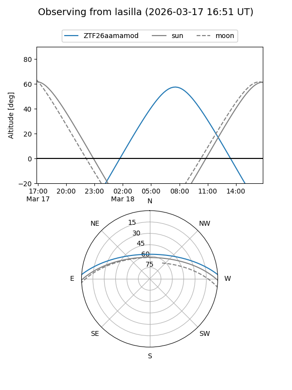
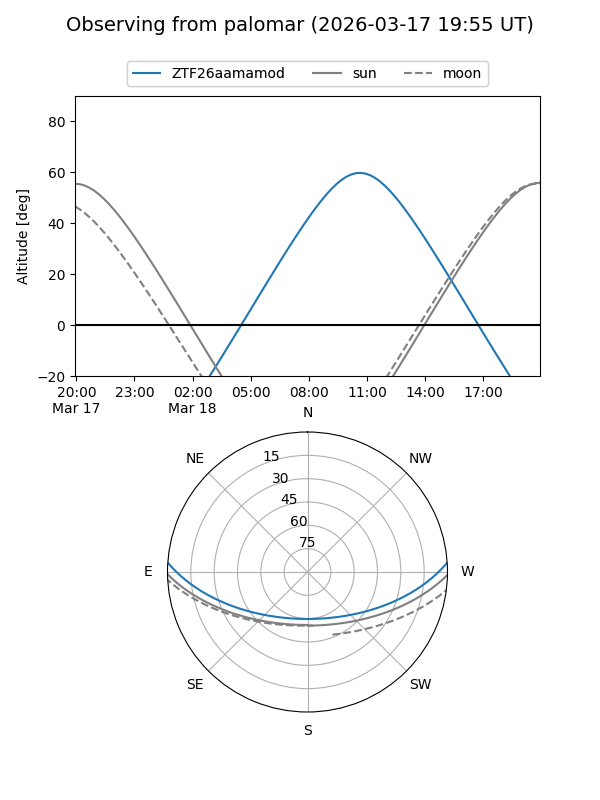

ZTF26aamamod
Target ZTF26aamamod at 2026-03-18 13:13
Aliases and brokers:
FINK: link
Lasair: link
ALeRCE: link
alt names
ZTF26aamamod (ztf,fink_ztf)
Coordinates:
equatorial (ra, dec) = 218.2494,+3.27986
equatorial (HMS+DMS) = 14:32:59.85,+03:16:47.51
galactic (l, b) = (352.8417,+55.97528)
Flags:
Photometry:
last ztfg=16.82
1 ztfg detections
Lightcurve
Visibility


Additional plots